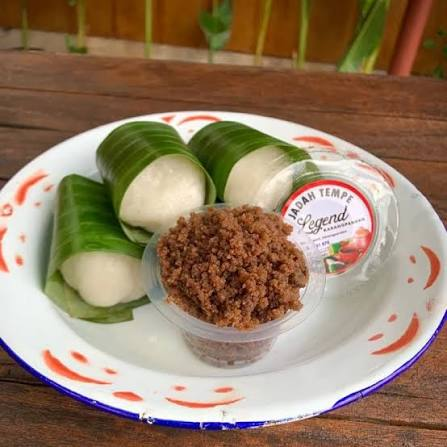

Sebelum matahari terbit, warung-warung kecil di lereng Gunung Lawu sudah menyiapkan jadah untuk para pendaki yang akan memulai perjalanan panjang ke puncak. Terbuat dari ketan yang dikukus lalu dipadatkan, jadah hadir dalam kesederhanaannya yang tak bisa digantikan — hangat, mengenyangkan, dan selalu mengingatkan siapa pun yang memakannya pada udara dingin dan kabut lereng Lawu.
Bekal Kekuatan dari Leluhur
Jadah bukan camilan baru. Ia adalah bekal tradisional yang sudah dikenal masyarakat pegunungan Jawa sejak lama, dibawa ke ladang atau ke perjalanan panjang karena kandungan energi karbohidratnya yang padat. Di lereng Lawu, jadah biasanya disajikan bersama tempe bacem manis atau gula merah cair — kombinasi rasa manis dan gurih yang sederhana namun memuaskan.
"Jadah itu makanan pendaki. Sebelum naik, makan jadah dulu. Sampai atas, badan tetap hangat dan kuat."
Fakta Menarik
- Jadah dibuat dari ketan putih yang dikukus, lalu ditumbuk atau dipadatkan hingga teksturnya kenyal dan padat
- Biasanya disajikan hangat bersama tempe bacem, gula merah, atau kelapa parut berbumbu
- Menjadi salah satu camilan khas yang dicari wisatawan dan pendaki di kawasan Tawangmangu
- Beberapa penjual jadah di lereng Lawu sudah berdagang di tempat yang sama selama puluhan tahun

Mengapa Penting?
Dalam kesederhanaannya, jadah menyimpan filosofi hidup masyarakat pegunungan: bahwa kekuatan tidak selalu datang dari sesuatu yang rumit atau mahal. Sebutir ketan yang dipadatkan dengan penuh perhatian cukup untuk menghangatkan tubuh dan menemani perjalanan panjang menyusuri lereng Lawu.